Modelling loan interest rates
Suggested answers
These are suggested answers. This document should be used as reference only, it’s not designed to be an exhaustive key.
In this application exercise we will be studying loan interest rates. The dataset is one you’ve come across before in your reading – the dataset about loans from the peer-to-peer lender, Lending Club, from the openintro package. We will use tidyverse and tidymodels for data exploration and modeling, respectively.
Before we use the dataset, we’ll make a few transformations to it.
- Your turn: Review the code below with your neighbor and write a summary of the data transformation pipeline.
Add response here.
loans <- loans_full_schema |>
mutate(
credit_util = total_credit_utilized / total_credit_limit,
bankruptcy = as.factor(if_else(public_record_bankrupt == 0, 0, 1)),
verified_income = droplevels(verified_income),
homeownership = str_to_title(homeownership),
homeownership = fct_relevel(homeownership, "Rent", "Mortgage", "Own")
) |>
rename(credit_checks = inquiries_last_12m) |>
select(
interest_rate, loan_amount, verified_income,
debt_to_income, credit_util, bankruptcy, term,
credit_checks, issue_month, homeownership
)Here is a glimpse at the data:
glimpse(loans)Rows: 10,000
Columns: 10
$ interest_rate <dbl> 14.07, 12.61, 17.09, 6.72, 14.07, 6.72, 13.59, 11.99, …
$ loan_amount <int> 28000, 5000, 2000, 21600, 23000, 5000, 24000, 20000, 2…
$ verified_income <fct> Verified, Not Verified, Source Verified, Not Verified,…
$ debt_to_income <dbl> 18.01, 5.04, 21.15, 10.16, 57.96, 6.46, 23.66, 16.19, …
$ credit_util <dbl> 0.54759517, 0.15003472, 0.66134832, 0.19673228, 0.7549…
$ bankruptcy <fct> 0, 1, 0, 0, 0, 0, 0, 0, 0, 0, 1, 0, 0, 0, 1, 0, 0, 0, …
$ term <dbl> 60, 36, 36, 36, 36, 36, 60, 60, 36, 36, 60, 60, 36, 60…
$ credit_checks <int> 6, 1, 4, 0, 7, 6, 1, 1, 3, 0, 4, 4, 8, 6, 0, 0, 4, 6, …
$ issue_month <fct> Mar-2018, Feb-2018, Feb-2018, Jan-2018, Mar-2018, Jan-…
$ homeownership <fct> Mortgage, Rent, Rent, Rent, Rent, Own, Mortgage, Mortg…Get to know the data
- Your turn: What is a typical interest rate in this dataset? What are some attributes of a typical loan and a typical borrower. Give yourself no more than 5 minutes for this exploration and share 1-2 findings.
ggplot(loans, aes(x = interest_rate)) +
geom_histogram(binwidth = 1)
ggplot(loans, aes(x = loan_amount)) +
geom_histogram(binwidth = 5000)
ggplot(loans, aes(x = term)) +
geom_bar()
ggplot(loans, aes(x = issue_month)) +
geom_bar()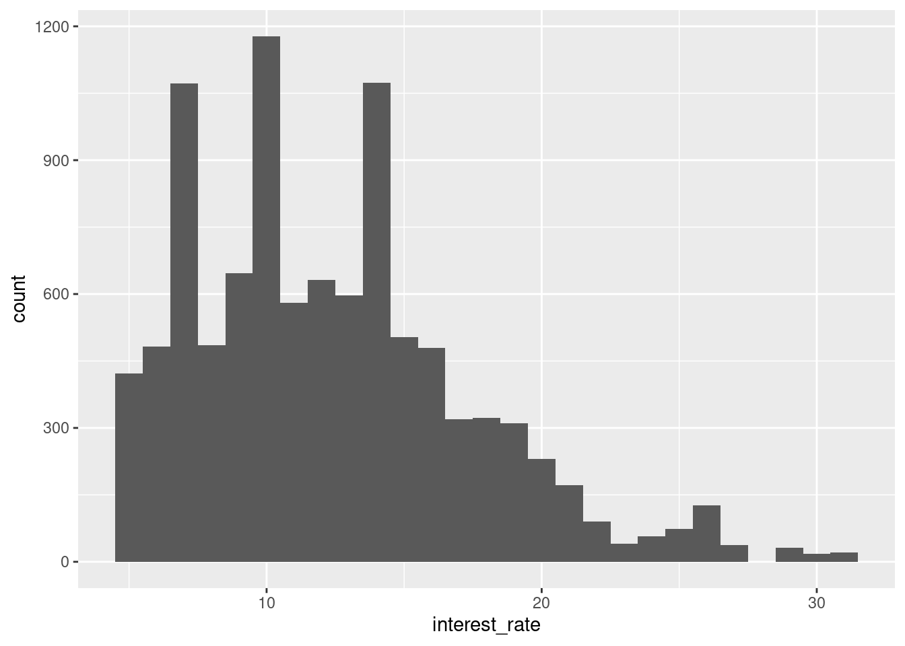
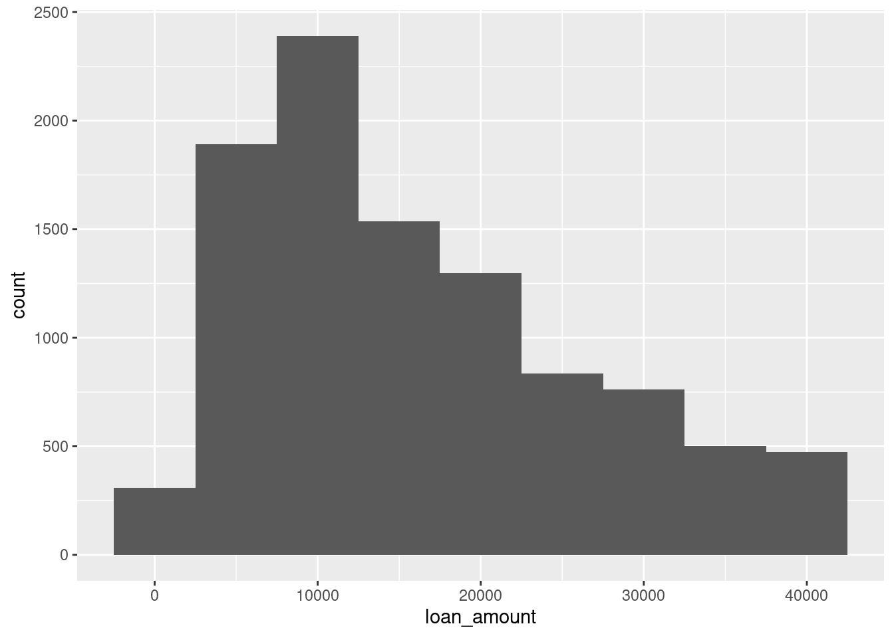
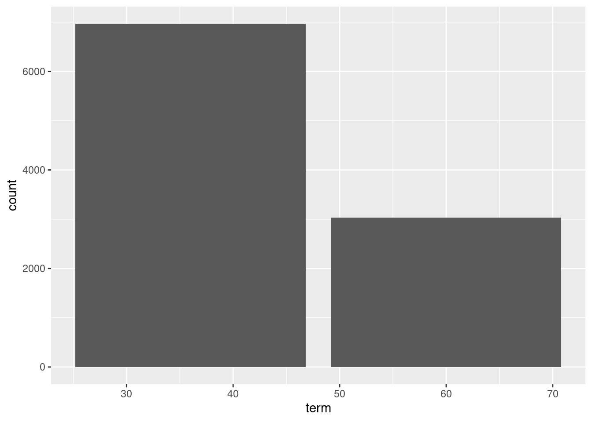
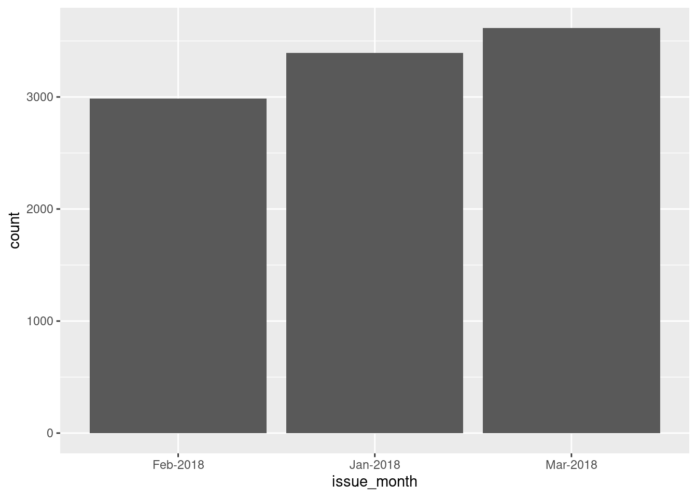
ggplot(loans, aes(x = credit_util)) +
geom_histogram(binwidth = 0.1)
ggplot(loans, aes(x = verified_income)) +
geom_bar()
ggplot(loans, aes(x = debt_to_income)) +
geom_histogram(binwidth = 10)
ggplot(loans, aes(x = bankruptcy)) +
geom_bar()
ggplot(loans, aes(x = credit_checks)) +
geom_bar()
ggplot(loans, aes(x = homeownership)) +
geom_bar()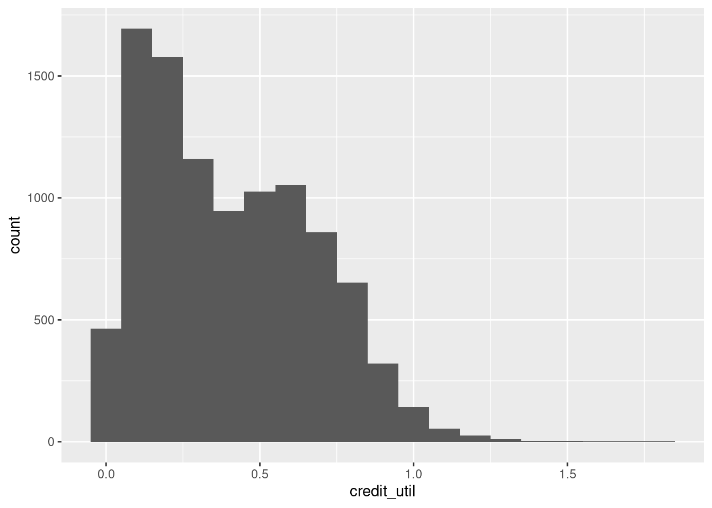
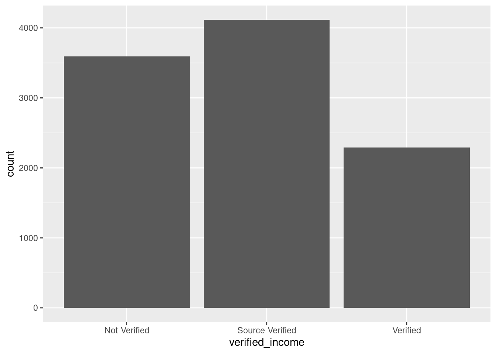
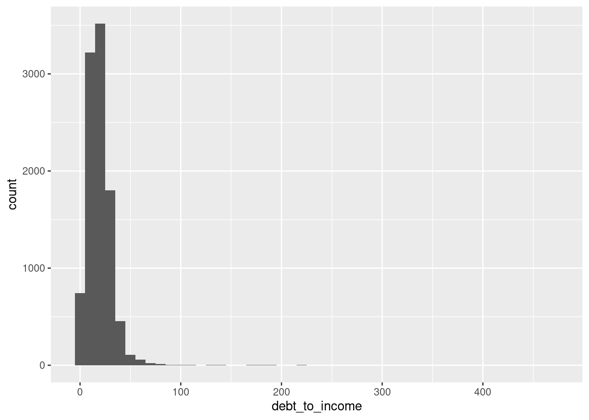
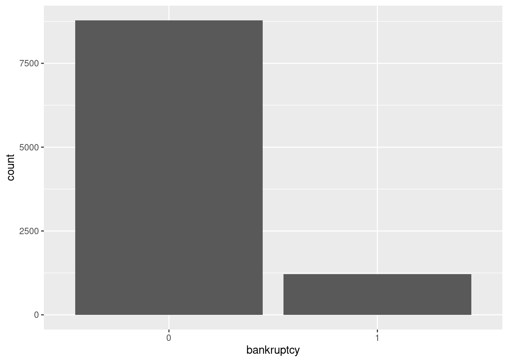
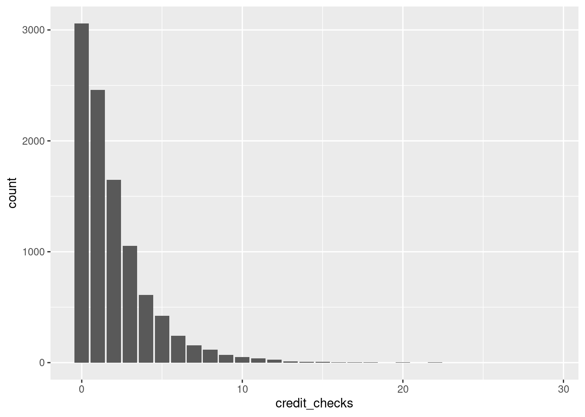
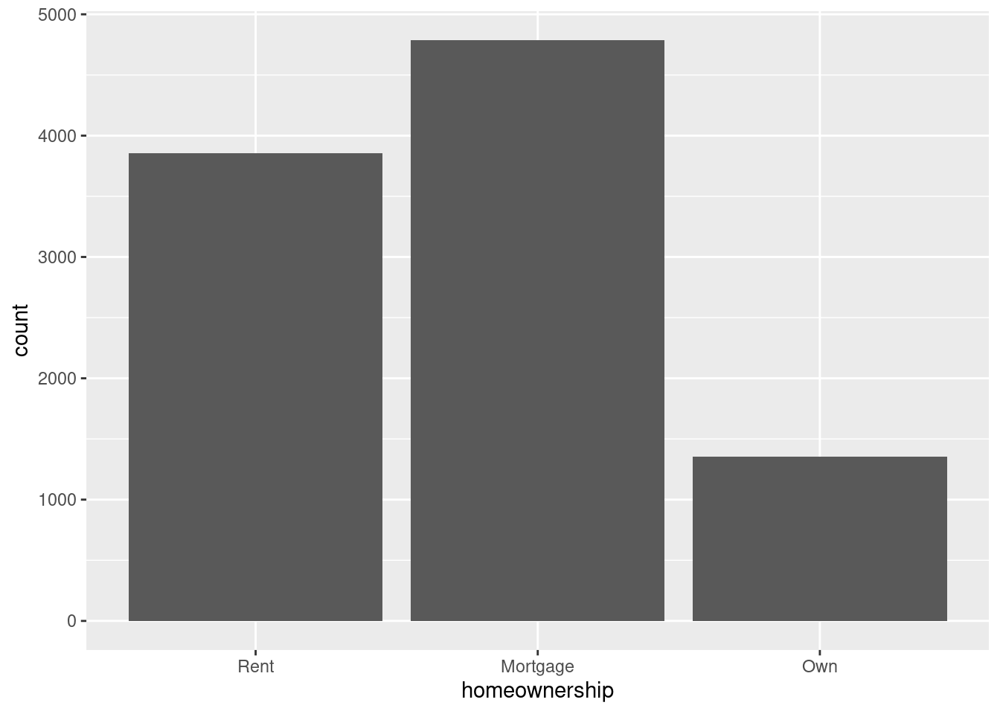
Interest rate vs. credit utilization ratio
The regression model for interest rate vs. credit utilization is as follows.
rate_util_fit <- linear_reg() |>
fit(interest_rate ~ credit_util, data = loans)
tidy(rate_util_fit)# A tibble: 2 × 5
term estimate std.error statistic p.value
<chr> <dbl> <dbl> <dbl> <dbl>
1 (Intercept) 10.5 0.0871 121. 0
2 credit_util 4.73 0.180 26.3 1.18e-147And here is the model visualized:
ggplot(loans, aes(x = credit_util, y = interest_rate)) +
geom_point(alpha = 0.5) +
geom_smooth(method = "lm")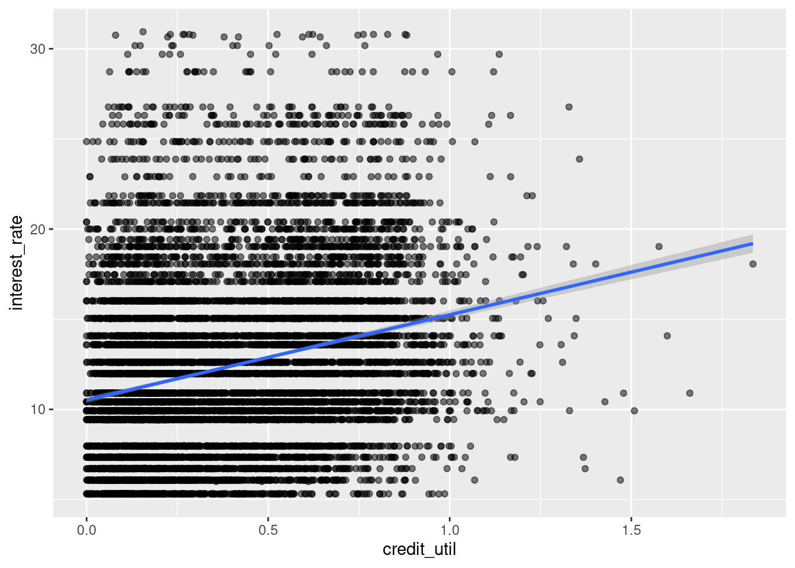
- Your turn: Interpret the intercept and the slope.
Intercept: Borrowers with 0 credit utilization are predicted, on average, to get an interest rate of 10.5%.
Slope: For each additional point credit utilization is higher, interest rate is predicted to be higher, on average, by 4.73%.
Interest rate vs. homeownership
Next we predict interest rates from homeownership, which is a categorical predictor with three levels:
levels(loans$homeownership)[1] "Rent" "Mortgage" "Own" - Demo: Fit the linear regression model to predict interest rate from homeownership and display a tidy summary of the model. Write the estimated model output below.
rate_home_fit <- linear_reg() |>
fit(interest_rate ~ homeownership, data = loans)
tidy(rate_home_fit)# A tibble: 3 × 5
term estimate std.error statistic p.value
<chr> <dbl> <dbl> <dbl> <dbl>
1 (Intercept) 12.9 0.0803 161. 0
2 homeownershipMortgage -0.866 0.108 -8.03 1.08e-15
3 homeownershipOwn -0.611 0.158 -3.88 1.06e- 4-
Your turn: Interpret each coefficient in context of the problem.
Intercept: Loan applicants who rent are predicted to receive an interest rate of 12.9%, on average.
-
Slopes:
The model predicts that loan applicants who have a mortgage for their home receive 0.866% lower interest rate than those who rent their home, on average.
The model predicts that loan applicants who own their home receive 0.611% lower interest rate than those who rent their home, on average.
Interest rate vs. credit utilization and homeownership
Main effects model
- Demo: Fit a model to predict interest rate from credit utilization and homeownership, without an interaction effect between the two predictors. Display the summary output and write out the estimated regression equation.
rate_util_home_fit <- linear_reg() |>
fit(interest_rate ~ credit_util + homeownership, data = loans)
tidy(rate_util_home_fit)# A tibble: 4 × 5
term estimate std.error statistic p.value
<chr> <dbl> <dbl> <dbl> <dbl>
1 (Intercept) 9.93 0.140 70.8 0
2 credit_util 5.34 0.207 25.7 2.20e-141
3 homeownershipMortgage 0.696 0.121 5.76 8.71e- 9
4 homeownershipOwn 0.128 0.155 0.827 4.08e- 1\[ \widehat{interest~rate} = 9.93 + 5.34 \times credit~util + 0.696 \times Mortgage + 0.128 \times Own \]
-
Demo: Write the estimated regression equation for loan applications from each of the homeownership groups separately.
- Rent: \(\widehat{interest~rate} = 9.93 + 5.34 \times credit~util\)
- Mortgage: \(\widehat{interest~rate} = 10.626 + 5.34 \times credit~util\)
- Own: \(\widehat{interest~rate} = 10.058 + 5.34 \times credit~util\)
- Question: How does the model predict the interest rate to vary as credit utilization varies for loan applicants with different homeownership status. Are the rates the same or different?
The same.
Interaction effects model
- Demo: Fit a model to predict interest rate from credit utilization and homeownership, with an interaction effect between the two predictors. Display the summary output and write out the estimated regression equation.
rate_util_home_int_fit <- linear_reg() |>
fit(interest_rate ~ credit_util * homeownership, data = loans)
tidy(rate_util_home_int_fit)# A tibble: 6 × 5
term estimate std.error statistic p.value
<chr> <dbl> <dbl> <dbl> <dbl>
1 (Intercept) 9.44 0.199 47.5 0
2 credit_util 6.20 0.325 19.1 1.01e-79
3 homeownershipMortgage 1.39 0.228 6.11 1.04e- 9
4 homeownershipOwn 0.697 0.316 2.20 2.75e- 2
5 credit_util:homeownershipMortgage -1.64 0.457 -3.58 3.49e- 4
6 credit_util:homeownershipOwn -1.06 0.590 -1.80 7.24e- 2\[ \widehat{interest~rate} = 9.44 + 6.20 \times credit~util + 1.39 \times Mortgage + 0.697 \times Own - 1.64 \times credit_util:Mortgage - 1.06 \times credit_util:Own \]
-
Demo: Write the estimated regression equation for loan applications from each of the homeownership groups separately.
- Rent: \(\widehat{interest~rate} = 9.44 + 6.20 \times credit~util\)
- Mortgage: \(\widehat{interest~rate} = 10.83 + 4.56 \times credit~util\)
- Own: \(\widehat{interest~rate} = 10.137 + 5.14 \times credit~util\)
- Question: How does the model predict the interest rate to vary as credit utilization varies for loan applicants with different homeownership status. Are the rates the same or different?
Different.
Choosing a model
Rule of thumb: Occam’s Razor - Don’t overcomplicate the situation! We prefer the simplest best model.
glance(rate_util_home_fit)# A tibble: 1 × 12
r.squared adj.r.squared sigma statistic p.value df logLik AIC BIC
<dbl> <dbl> <dbl> <dbl> <dbl> <dbl> <dbl> <dbl> <dbl>
1 0.0682 0.0679 4.83 244. 1.25e-152 3 -29926. 59861. 59897.
# ℹ 3 more variables: deviance <dbl>, df.residual <int>, nobs <int>glance(rate_util_home_int_fit)# A tibble: 1 × 12
r.squared adj.r.squared sigma statistic p.value df logLik AIC BIC
<dbl> <dbl> <dbl> <dbl> <dbl> <dbl> <dbl> <dbl> <dbl>
1 0.0694 0.0689 4.83 149. 4.79e-153 5 -29919. 59852. 59903.
# ℹ 3 more variables: deviance <dbl>, df.residual <int>, nobs <int>- Review: What is R-squared? What is adjusted R-squared?
R-squared is the percent variability in the response that is explained by our model. (Can use when models have same number of variables for model selection)
Adjusted R-squared is similar, but has a penalty for the number of variables in the model. (Should use for model selection when models have different numbers of variables).
- Question: Based on the adjusted \(R^2\)s of these two models, which one do we prefer?
The interaction effects model, though just barely.
Another model to consider
- Your turn: Let’s add one more model to the variable – issue month. Should we add this variable to the interaction effects model from earlier?
linear_reg() |>
fit(interest_rate ~ credit_util * homeownership + issue_month, data = loans) |>
glance()# A tibble: 1 × 12
r.squared adj.r.squared sigma statistic p.value df logLik AIC BIC
<dbl> <dbl> <dbl> <dbl> <dbl> <dbl> <dbl> <dbl> <dbl>
1 0.0694 0.0688 4.83 106. 5.62e-151 7 -29919. 59856. 59921.
# ℹ 3 more variables: deviance <dbl>, df.residual <int>, nobs <int>No, the adjusted R-squared goes down.